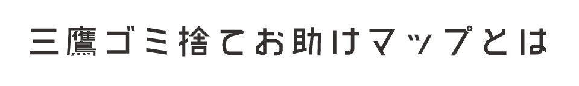

はじめに
このサイトは三鷹市のゴミ袋の取扱店や、牛乳パック等を自主回収している店舗をマッピングして、三鷹市民の皆様のゴミ捨てをお助けするために作りました。 データは三鷹市役所のオープンデータを使っております。
三鷹市役所
三鷹市ゴミ袋取り扱い店
三鷹市のごみ袋を扱っている店舗をマッピングしています。三鷹市は、燃やせるごみと燃やせないごみは市が指定する有料ごみ袋に入れて出すことになっています。
牛乳パック等自主回収マップ
三鷹市近隣で牛乳パック・ペットボトル・トレイ・アルミ缶・卵のパックなどを自主回収している店舗をマッピングしています。 三鷹市のゴミの量は年々増えています。自主回収店舗を上手に利用して、リサイクル活動に参加しましょう。
最後に
収集日や分別を守ってより暮らしやすくて綺麗な三鷹市を一緒に作っていきましょう。
制作
首都大学東京システムデザイン学部システムデザイン学科
インダストリアルアートコース3年 原ひかり